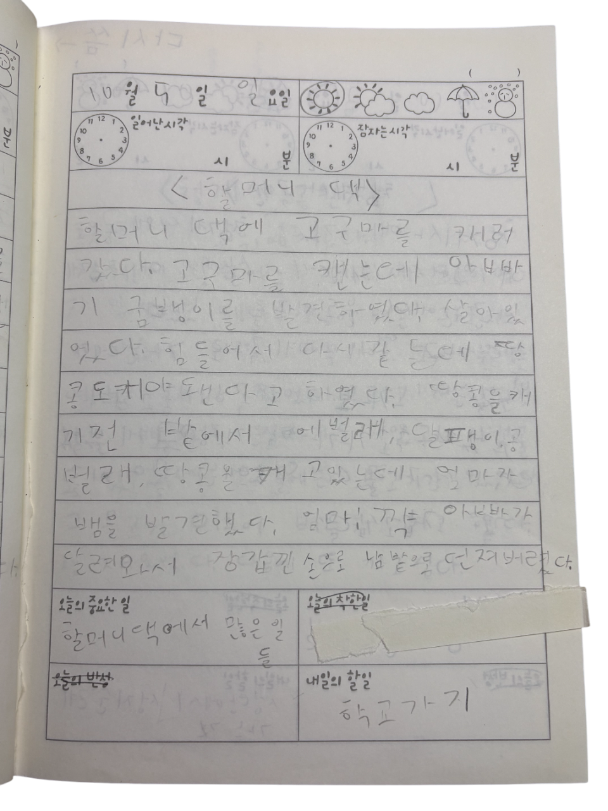
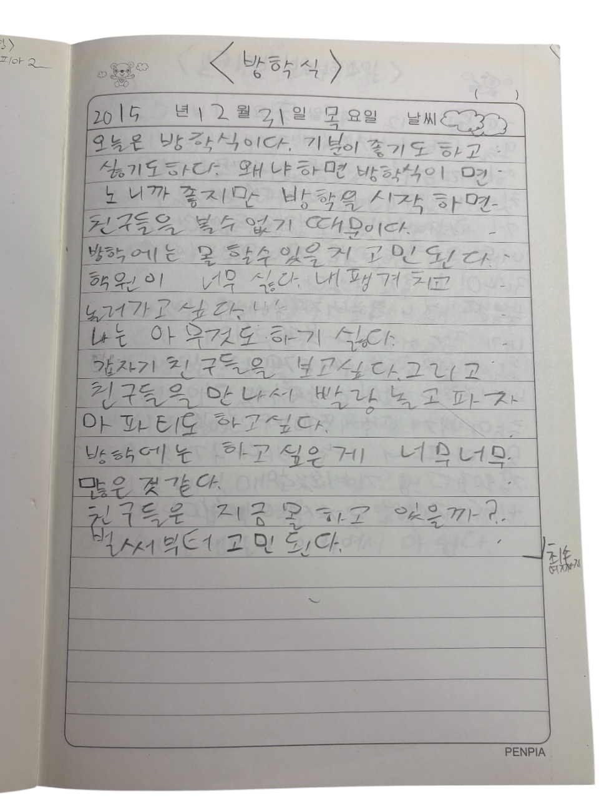
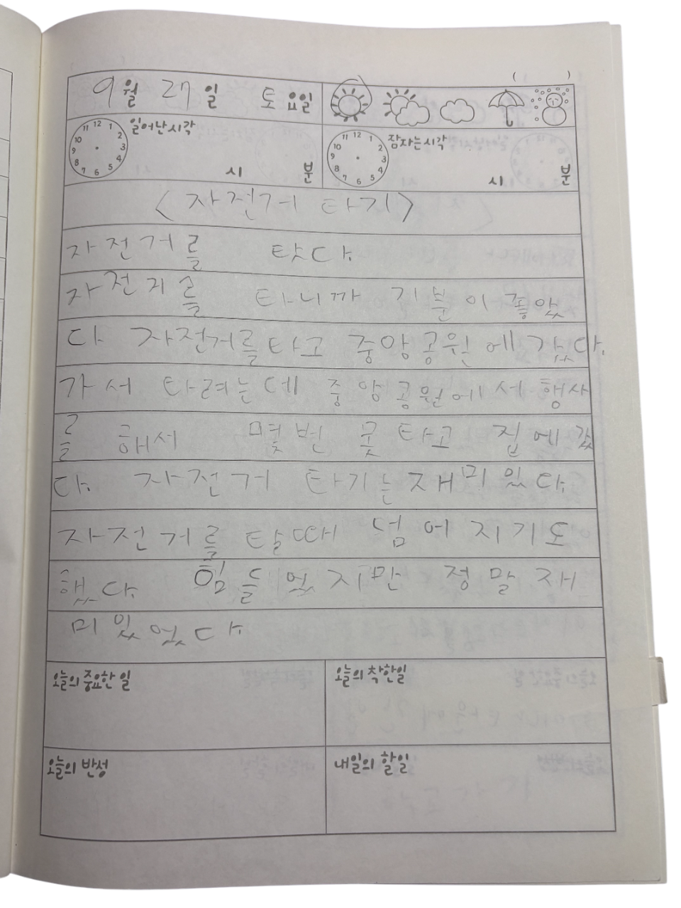

과거
| ☜ 윤서영어린이의 최애곡 |
|---|
|  | ◈할머니댁◈ 어린아이의 시점에서 보는 농촌생활을 알수있다. 뱀을 본것이 기억에 남았나보다. |
| ◈방학식◈ 방학이 좋지만 친구들을 만나지 못한다는 점에 더 속상해하고있다. 어릴때부터 사람을 좋아한다는 사실을 알수있다. |  |
|  | ◈자전거타기◈ 처음 자전거를 타고 공원으로 간 날이다. 자전거 타다 넘어져도 재밌었다고 하는점을 보아 스포츠에 흥미를 느끼는것을 알수있다 |
| ◈루벤스와 거장들◈ 어린 아이가 평생의 관심사를 정하는데는 결코 긴 시간이 필요하지 않다. 단 하루의 경험으로 아이는 자라서 계원예대에 오게 된다. | 
 |
'운동과 사람을 좋아하고 미술을 사랑했던 어린이 윤서영을 알수있다.'